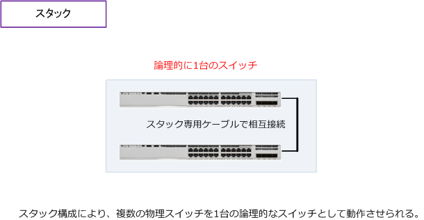
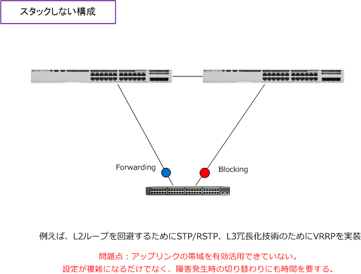
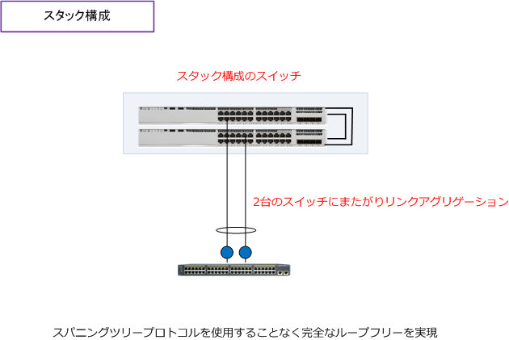

Stack
スタックとは
スタックとは、複数の物理スイッチを論理的に1台のスイッチとして動作させる技術のことです。物理的な スイッチ（同じ機種、ソフトウェアバージョン）をスタック専用ケーブルで相互接続することで実現します。 下図では、2台の物理的なスイッチをスタック接続していますが、メーカの仕様の範囲内で3台でも4台でも スタック構成を組むことができます。

スタックにより、複数の物理スイッチを1つの論理的なスイッチにすることで、設定ファイルが1つになる ので設計・構築も容易になります。また、監視対象の機器としても1台になり運用管理も容易になります。
また、スイッチが故障して取り換える場合、既存のスタックしている機器で設定情報を保持しているので スタックする追加スイッチに設定情報を入れる必要はなくスタック接続するだけで使えるようになります。 ※ スタック構成したスイッチの障害発生時の取り換え手順はメーカーによって異なります。また、実際には手順がやや複雑です。
スタック構成のメリット
スタック構成ではない場合、2台にまたがりリンクアグリゲーションができないことから、下図のように 例えば、Layer2のループ回避技術としてスパニングツリープロトコルを使用し、Layer3の冗長化技術に VRRPを使用するような構成にする必要があります。

スタックしたスイッチでは、2台のスイッチにまたがりリンクアグリゲーションを構成することができます。 例えば、スタック構成のLayer3スイッチの配下にLayer2スイッチを接続する場合は、Layer2ループを回避 するためにスパニングツリープロトコルを実装する必要はなく、完全なループフリーな状態を実現できます。

アップリンク帯域が有効に使われ、設計もシンプルになり障害発生時の切り替わりも高速に収束できます。